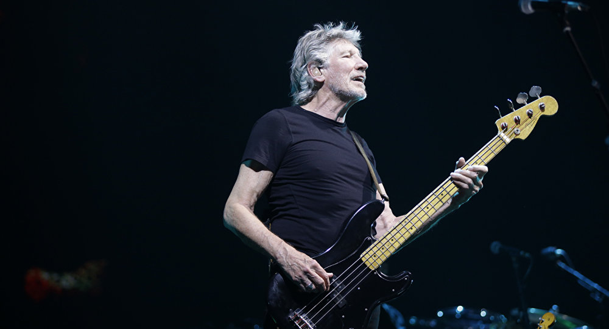
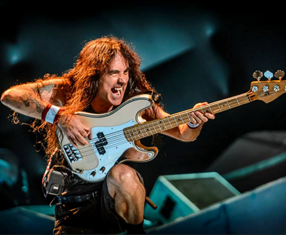
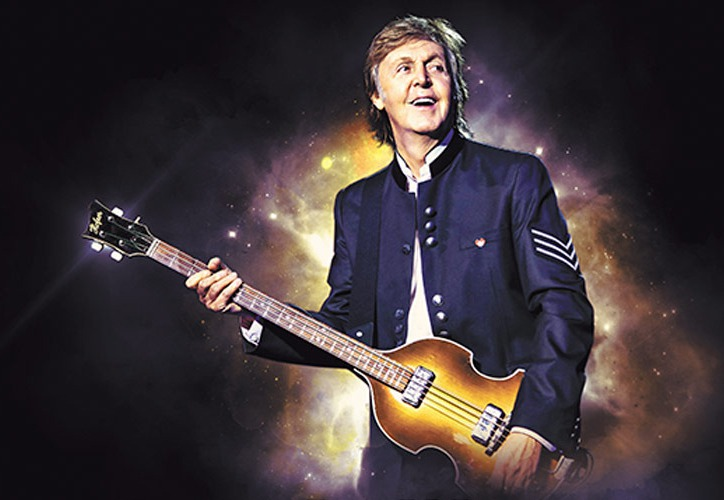
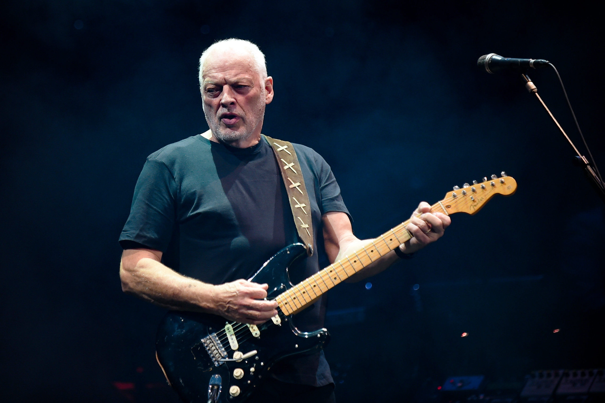
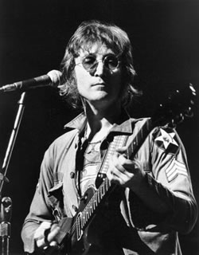
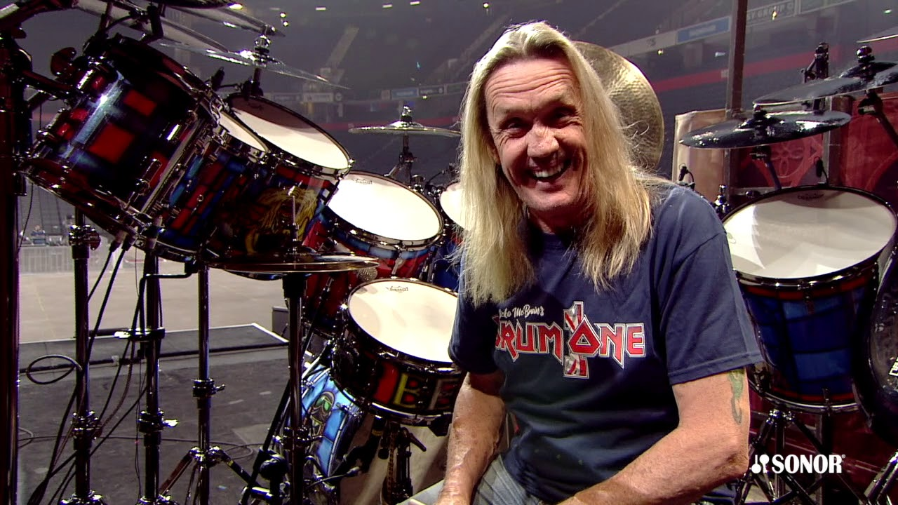
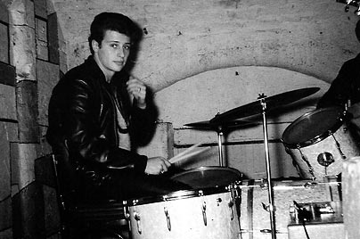

Quando falos em rock, temos tres intrumentos fundamentais que sao: guitarra,contra-baixo,bateria;
Aqui vamos mostra esse instrumentos nos 3 principais tipos de rocks mais escutados no mundo
Contra Baixo
Quando o assunto e rock o contrabaixo e um dos intrumentos mais importantes.
Contra baixo no rock progressivo
com ele podemos ter aquele som mais relaxante, no caso do rock progressivo ou alternatico. Podemos ver esse belo instrumento atuando com sua perfeição, na musica Money do Pink Floyd,que um rock alternativo, vemos abaixo:
Do mestre Roger water
Gostaram do som desse lindo instrumento;)
Contrabaixo no rock metal
O contrabaixo no rock metal não temos aquele grave gostozinho de se ouvir como no rock progressivo,mas temos um toque mais "fino",que quando trabalha com guitarra fica uma coisa de encher os olhes de lagrimas:
Um dos baixistas mais famosos no mundo do metal e o Steve Harris, da banda Iron Maiden,olha uma fotinha dele :)
caso não acredite que esse som e do contra baixo de uma olhada nesse video no youtube video do carinha espetacular
No rock classico
No rock classico classico o contra baixo tem um som mais de dancante,temos aquele grave que faz toda a diferençã podemos ver isso na musica Dont let me down dos The Beatles:
imagens do Paul McCartey
imagem tirada do google
Guitarra
Guitarra no rock progressivo
A guitarra assim como o baixo no rock progressivo tem um som marcante que nao tao lento mas tambe não e tao rapido e uma coisa acradevel aos ouvidos podemos ver isso com o seguinte solinho tirado do canal,onde o moço ele reproduz o solinho do David Gilmour. essa musica se chama Another Brick in the wall,vale lembra que uma das musica mais famosas da banda
Guitarra no rock metal
A gutirra no rock metal ela e mais agitada como se tivesse vida propria,e tem um som magnifico que não consegue deixar a cabeça no lugar. podemos ver isso na musica The Trooper da banda Iron Maiden,que so o comço e de arrepiar.

aqui podemos ver o moço que fezer essa obra de arte. O nome dele e Dave Murray
No rock classico
O rock classico a guitarra tem um som mais suave um som que ajuda a relaxar um som agradavel aos ouvidos,diferente dos outros tipos ela tem o toque mais suave e o mais encantador, como podemos ver a seguir no solo da musica Let it Be dos The Beatles.Logo a baixo vemos uma fotinha do John Lennon criador dessa linda composição :).
você pode ver moço tocando clicado aqui
Bateria no rock progressivo
Assim como nos outros instrumentos do rock progressivo listados a cima,a bateria tambe não foje muito do modo que ela atua, tambem com um toque mais suave , mas nem tanto. Podemos ate disser que esse tipo de rock e a ta mais facil de aprender a tocar, para quem esta iniciado,pois não contem ritimos muito acelerado,assim como os outros,isso vale para qualquer instrumento listado aqui. ;).
Vamos ver escutar como e esse lindo instrumento em ação.Esse que vamos escutar e um cover da musica
Comfortably Numb do Pink Floyd, esse cover foi tirado da aqui. A o mais importante
o baterista que tocou a musica pela primeira vez foi o Nick Mason, que era da banda do Pink Floyd,esse moço aqui:
Bateria no rock Metal
Bateria no metal ela e como os outros instrumetos,precisa ter um abilidade para tocala,para não s perder no meio da musica. e um dos caras que tem habilidade para isso e o Nicko McBrain da Banda Iron Maiden, ele e o cara.
Bateria no rock classico
No rock classico a bateria ela tem um som muito marcante talvez ate mais que os outros intrumentos,mas quando ela se "junta"com a Guitarra Sra e Sr ,que maquinifico. Tambem e um stilo facil para quem ta começando agora. Vamos escutar um menino de 8 anos tocando a musica The end dos The Beatles,esse garotinho manda de mais B).
você pode ver esse menino tocando no clicando AQUI
Esse garoto incrivel, toca igual o Pete Best, primeiro baterista dos the Beatles.Esse moço aqui
foto de incio de carreira